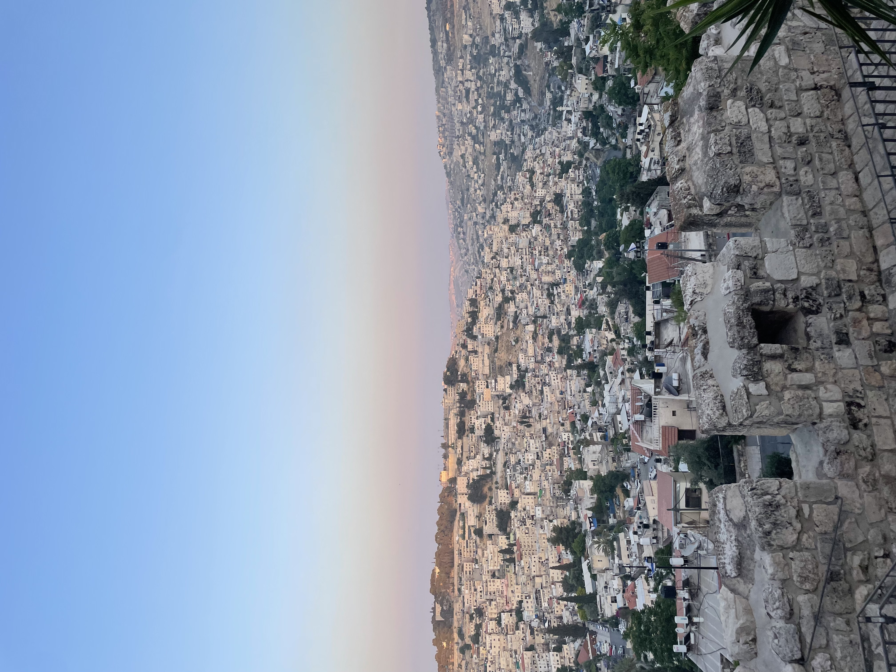
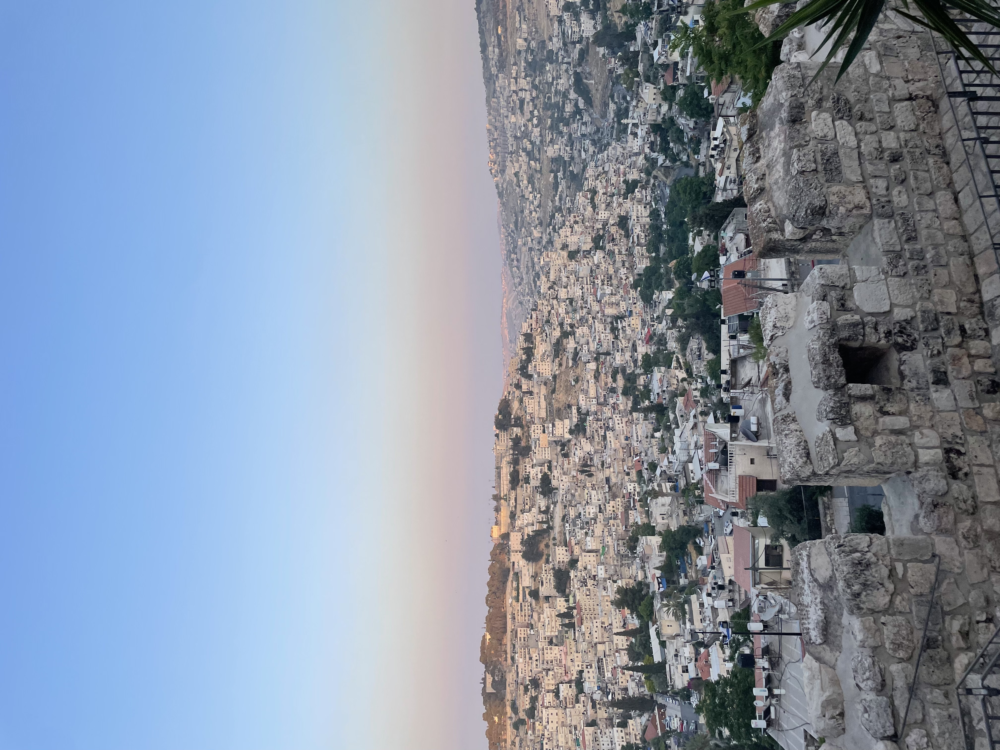
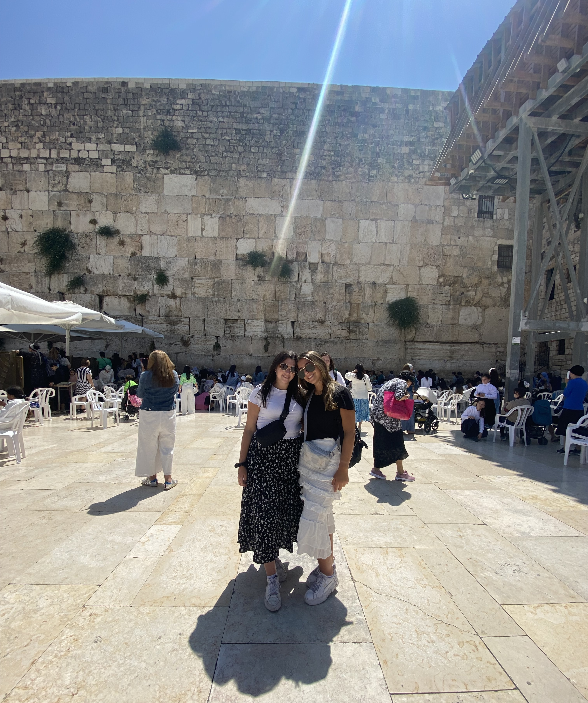

Livingston, New Jersey is 46% Jewish. Many residents who live in Livingston are Jewish, however there is a large population that is not. I grew up as a conservative Jew. Conservative Judaism is a religious movement that seeks to conserve essential elements of traditional Judaism’s but allows for the modernization of religious practices in a less radical sense than that espoused by Reform Judaism. As a conservative Jew, I would go to temple for all the high holidays and would always celebrate any Jewish holiday with my family. We would try to light the candles for shabbat every Friday night, but as my sisters and I got older, out tradition started to die.
As a child, I never really understood what it meant to be Jewish. I always just listened to what my parents told me, and never questioned anything. I went to Hebrew school for 7 years of my life, but I thought of Hebrew school as a place to socialize with friends, and less of a learning environment. I have always been proud to say I am Jewish, but never was able to form my own opinions on what it means to be Jewish. Going to Israel changed all of that for me, and I got to form my own connections with Judaism.
 

Living in Israel and being around a plethora of Jews allowed me to see that being Jewish is more than just celebrating the holidays and eating challah on Saturdays. Being Jewish is the basis of all my beliefs and is a religion that I am proud to be a part of. Although I live in Livingston, New Jersey, Israel will always be my home because it is the world’s first Jewish state. You don’t have to hide that you are Jewish when in Israel, it is something people are proud to show. I went to Israel not knowing a lot about Judaism, but left knowing more than I ever thought was possible.
Learning about my ancestors and what they had to go through in order to find a home was truly hard for me. The Jews have faced a lot of hardships and genocide, specifically the Holocaust. The Holocaust was the genocide of Jews in Europe during World War II. Nazi Germany and its collaborators systematically murdered six million jews across Europe. This was an event that affected so many Jewish families, including my own, and is still spoken about today. Jews are considered outcast in every part of the world besides Israel, and that’s why I felt safe no matter where I was. I left Israel with a different perspective on what it means to be Jewish. I came home with more knowledge on the importance of being Jewish and felt more connected to my religion than I ever have. Many of my beliefs have changed, but I as an individual only grew.
One of the first cities that I visited in Israel was Jerusalem. Jerusalem is the capital of Israel and is one of the oldest cities in the world. It has been the holiest city in Judaism and the ancestral spiritual homeland of the Jewish People since the 10th century BC. To the Jews, Jerusalem is the place where Abraham, the first Patriarch of Judaism, nearly sacrificed his son Isaac to God. All of creation is considered to have begun in Jerusalem. When I went to Jerusalem, the first landmark I visited was the Western Wall. The Western Wall is the holiest place where Jews are permitted to pray and is a reminder to Jewish people of their history and gives them a link to the Temple. Millions of people a year visit the Western Wall and leave a written prayer on pieces of paper wedged into the cracks of the ancient home. Going to the Western Wall was an emotional experience for me, and I left the wall with a completely different perspective on the meaning of Judaism.